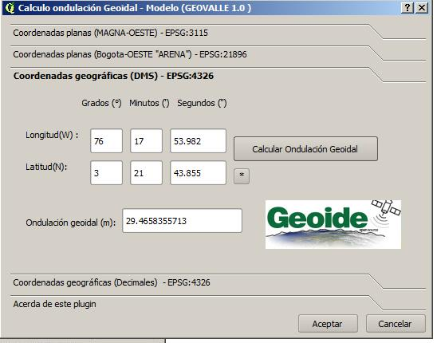

Paso 1 : Descarga del plugin desde el repositorio, ubicado en http://54.245.115.218/plugin/plugins.xml
Paso 2: Descarga del plugin ( geovallecvc.zip )
Paso 3: Descomprimir plugin en carpeta de plugins de QGIS
Directorio de inicio (denotado por ~) en Windows usualmente es algo como C:\Documents and Settings\(usuario). Los subdirectorios en esta rutass son considerados como los paquetes de Python que se pueden importar a QGIS como plugins.
* Para mi caso, el archivo .zip lo descomprimi en C:\Users\Andres\.qgis2\python\plugins tal como muestra la grafica !
Paso 4: Iniciar QGIS y ir al menú de Complementos -> Administrar e instalar complementos
Paso 5: Habilitar plugin ( geovallecvc )
Paso 6: Iniciar plugin (geovallecvc ) desde el menú . Complementos -> geovallecvc -> Calculo Ondulación Geoidal
* Ventana de Bienvenida y Acerca del plugin
a) Calculo de ondulación geoidal a partir de Coordenadas planas ( MAGNA-OESTE)
- Digitar coordenadas Este, Norte y click en boton ( Calcular Ondulación Geoidal )
- Una vez realice el calculo, un mensaje indicará que fiinalizo el calculo (1), y el resultado de la ondulación (m) aparecerá en (2).
b) Calculo de ondulación geoidal a partir de Coordenadas planas ( Bogota-OESTE) en antigúo sistema de referencia nacional (ARENA).
c) Calculo de ondulación geoidal a partir de Coordenadas Geográficas, en Grados,Minutos,Segundos ( DMS)

d) Calculo de ondulación geoidal a partir de Coordenadas Geográficas en (Decimales)
Comentarios finales
Espero que esta herramienta les sirva como utilidad, es mi primer plugin construido para QGIS realizado como ejercicio academico de exploración de funcionalidades avanzadas en QGIS, así que puede tener muchos Bugs, fue construido en más o menos 3 horas de desarrollo continuo, solo con conocimientos basicos de python, a continuación algunos de links que recopilan las fuentes que usé para contruir este plugin:
* Pronto la descarga se podra realizar directamente desde el repositorio de QGIS
Más acerca de geovalle ( Modelo geoidal para el valle del cauca )